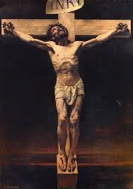
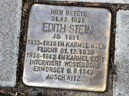

“IRMÃ CARMELITA E MORTE”
SEMANA SANTA - 1933
Dia 14 de Abril de 1933, Sexta Feira da Paixão do SENHOR JESUS. Edith devotamente ajoelhada na Capela do Carmelo rezava para o SENHOR suplicando proteção para ela e para o seu povo judeu. Mentalmente conversava com JESUS e dizia que sabia da terrível flagelação e da grandeza da cruz que ELE suportou para salvar toda humanidade. Agora, a maldade e crueldade dos poderosos estavam colocando covardemente uma terrível e discriminativa cruz, sobre todo o povo judeu. Ela então concordava que a maioria do povo não sabia por qual motivo eles tinham que passar por aquilo; mas os que tinham a graça de compreender os terríveis planos nazistas, deveriam aceitar a cruz em plenitude, em nome de todos. Por isso SENHOR, sinto-me pronta a aceitar, inclusive para poupar o meu povo, se for possível. Somente suplico ao SENHOR MEU DEUS, que me ensine ou que me indique como deveria fazê-lo. Abaixou os olhos repletos de lágrimas e rezou mais uma dezena do Terço de NOSSA SENHORA. Depois, terminada à Hora Santa, Edith tinha a íntima certeza de ter sido ouvida por DEUS, muito embora não soubesse ainda como e quando seria a sua cruz.
O problema das tropas Nazistas crescia violentamente. O povo buscava soluções e compreendiam que a morte parecia inevitável. Então muitos procuravam caminhos e se movimentavam, porque também na realidade só existiam duas soluções: Viajar para outro país ou permanecer na Alemanha. Em casa a noite, depois das orações, uma das suas irmãs conversando com ela, colocou a possibilidade dela viajar para a America do Sul e dar aulas numa Universidade local. Edith permaneceu pensativa em silencio. Despediu-se da sua irmã e foi para o seu quarto. Rezou um pouco mais e então, decidiu permanecer na Alemanha, mas entrar definitivamente para a vida religiosa no Carmelo. Assim, desde aquele momento, ela começou a se preparar conscientemente para seguir a sua decisão.
ORDEM CARMELITA DE COLÔNIA
Assim, no dia 14 de Outubro de 1933 pode realizar a sua ardente aspiração de exercitar à vida contemplativa. Foi acolhida pelo Carmelo de Colônia, onde se tornou a Irmã Teresa Benedita da Cruz. Sua cela era simples, com cerca de 3,50 x 3,00, com 10,50 metros quadrados, com janela aberta para o jardim, uma cama com cavaletes e tabuas de madeira, colchão de palha, um simples lençol e um cobertor; tinha uma mesinha com uma cadeira, e sobre a mesinha uma cestinha com as coisas necessárias para costurar, e no canto da parede três prateleiras, ocultas com uma cortina de pano. Na parede um Crucifixo e encima da mesinha uma pequena cruz de madeira num pedestal. Na simplicidade deste ambiente ela viveu. Dada a importância do seu trabalho, recebeu permissão de levar para o Mosteiro os seus livros. A Madre Superiora pediu que ela continuasse com a sua monumental Obra Filosófica: “Ato e Potência”, onde ela demonstra que DEUS, SER Infinito e Criador, ELE está intimamente presente em cada uma das suas criaturas. Essa Obra foi publicada após a sua morte, com o titulo “Ser Finito, Ser Eterno”.
FALECIMENTO DE SUA MÃE
Recebeu em meados de 1936, duas noticias importante através da sua irmã Rosa que foi visitá-la: o falecimento da senhora Augusta Courant Stein, sua querida mãe que idosa com problemas de saúde, faleceu no dia 14 de Setembro de 1936; Edith chorou porque não estava presente para ajudar a sua mãe; depois abraçou carinhosamente sua irmã Rosa, pelo fato dela também ter acolhido a Religião Católica. Na verdade, Rosa sempre admirou o procedimento da sua irmã Edith, inclusive da sua coragem e sinceridade em acolher o Catolicismo. Assim com o falecimento da mãe, ela decidiu também acompanhar Edith, recebendo o Batismo na Igreja Católica.
VOTOS PERMANENTES NO CARMELO
Em Abril de 1938, Irmã Teresa Benedita da Cruz fez seus votos permanentes (Castidade, Obediência e Pobreza) na Congregação Carmelita e também publicou artigos sobre a História do Carmelo. Em Maio de 1938, teve outra noticia que muito lhe entristeceu: o falecimento de seu grande amigo e famoso escritor Mestre Edmund Husserl.
TERRÍVEL NOITE DE CRISTAIS

A“Noite de Cristais no Reich”, constituiu-se num abominável ataque Nazista contra os judeus e seus bens, em todas as cidades alemãs, na noite do dia 9 para o dia 10 de Novembro de 1938, realizado por paramilitares da "chamada S A" e por civis alemães. As autoridades apreciaram o acontecimento sem contudo intervir. O nome “Noite de Cristais” é por causa da quantidade incontável de pedaços de vidros partidos, em consequência dos violentos arrombamentos de lojas, edifícios, casas residenciais e comerciais, assim como sinagogas judaicas, que encheram as ruas das cidades, com muitos cacos, pedaços e fragmentos de vidros. Nessa blitz, morreram muitos judeus e grande quantidade foi presa e enviada para os Campos de Extermínio.
SEGUNDA GRANDE GUERRA MUNDIAL
E assim, a Alemanha já preparada e intencionada a ocupar outros países, invadiu a Polônia, começando a Segunda Grande Guerra Mundial. Familiares da Irmã Teresa (Edith), fugiram para os Estados Unidos e alguns foram para a Colômbia, enquanto outros permaneceram na Alemanha.
Na Holanda, Irmã
Teresa continuou o seu trabalho escrevendo um sólido e profundo tema sobre
a vida de Dionísio O Aeropagita e também, começou a escrever a tradução e o comentário
do livro “Scientia Crucis”
de São João da Cruz, sua obra mais importante. (Esta obra não foi concluída).
No silêncio de sua cela no Convento, se recordava da Semana Santa, em 1933, ajoelhada diante do Altar do SANTÍSSIMO, devotamente rezava a JESUS suplicando pelo seu povo judeu, em face da terrível maldade desencadeada pelos Nazistas, que ocupando o poder na Alemanha, decidiram prender e eliminar a população judaica. E, então, corajosamente ela pediu a NOSSO SENHOR, que estava pronta a assumir as dores e os sofrimentos em lugar do povo. E depois, se recordou da frase que ela mesma disse: “Estou consciente de que o SENHOR ouviu as minhas palavras.” Lembrou-se ainda, que em 1938 ela escreveu: “Tenho a certeza de que DEUS aceitará a minha vida. Penso sempre na Rainha Ester (conforme a história descrita na Sagrada Escritura), ela decidiu interceder diante do rei Xerxes (Assuero) suplicando a liberdade do povo judeu naquela época ameaçado de ser dizimado. E continuando com seus pensamentos Edith raciocinava: “Sou uma pequena Ester, pobre e impotente. Mas, o Rei que me escolheu, é infinitamente grande e misericordioso. E isto é uma grande consolação para mim”. E foi assim, que Edith Stein suplicou ao Rei, NOSSO SENHOR JESUS CRISTO como uma nova Ester, ela regenerada pelo sacrifício expiatório DELE mesmo, de CRISTO na Cruz pagando os pecados da humanidade, por ela e por todos nós, para nossa salvação. A ELE, ela agora implorava piedade para o seu povo, para os judeus.
A ALEMANHA OCUPA A HOLANDA
Os Nazistas com grande poderio militar e muita violência em 1940 ocuparam a Holanda. O perigo era eminente. Com a necessária rapidez, ela com as Irmãs do Mosteiro, começaram os preparativos para a Irmã Teresa e sua irmãzinha Rosa serem transferidas para outro Mosteiro, agora na Suíça, a fim delas ficar protegidas, considerando que a Suíça se mantinha neutra na guerra. Mas os nazistas eram super minuciosos e maldosamente desconfiavam de tudo. E por isso mesmo, Irmã Teresa foi convocada e obrigada a se apresentar ao escritório da Gestapo em Amsterdam, onde foi recebida com certa hostilidade, porque se apresentou cumprimentando os nazistas com um tranquilo e respeitoso “Louvado seja NOSSO SENHOR JESUS CRISTO”.Também durante a pesquisa dos seus documentos pela Gestapo, foi asperamente interrogada, e lhe foi perguntado por que em seu passaporte o “J” de judeu não estava escrito com letra maiúscula, conforme a exigência nazista, sinal de pertença à raça judaica? E porque também não tinham colocado a palavra “Sara”, antes de seu nome, segundo as últimas exigências impostas às mulheres judias? Entretanto, como eram observações sem muita relevância, a Gestapo a dispensou, mandando que ela aguardasse outra convocação. O perigo rondava em todas as ocasiões.
Todavia, os documentos, os contatos e a condução já estavam quase tudo certo para as duas irmãs partirem para o Mosteiro de La Paquier, na Suíça, quando aconteceu um fato novo. Era o dia 26 de Julho de 1942. Em todas as Igrejas Católicas da Europa, foi lida uma Carta Pastoral dos Bispos, com um forte protesto reagindo contra as terríveis e covardes perseguições nazistas contra os judeu-Católico. Os nazistas ao invés de acatarem aquela queixa real, se inflamaram e reagiram rapidamente. Foi um “corre-corre” porque eles prendiam e só iam verificar algum engano depois. Enviavam os judeus em vagões para os campos de concentração e de extermínio, todos os membros não arianos (ou seja, todos aqueles das Comunidades Religiosas que não eram alemães). Então os contatos que iam levar as irmãs para a Suíça ficaram com medo de levar Rosa. Disseram: “No Convento eles só poderão aceitar a Irmã Teresa Benedita, mas a senhora Rosa não”. Irmã Teresa Benedita (Edith) corajosamente não quis deixar a sua irmã sozinha. Preferiu também ficar e aproveitar para acabar a tradução e escrever o seu comentário sobre o livro “Scientia Crucis” de São João da Cruz.
PRESAS PELA GESTAPO
Na tarde do dia 2 de Agosto de 1942, às 17 horas, quando Irmã Teresa Benedita estava lendo para as Irmãs no refeitório, um tema religioso com objetivo de meditação, chegaram dois oficiais da Gestapo e nervosamente tocaram a sineta do Mosteiro. A ordem Nazista era de prender todos os católicos de ascendência judaica. Depois de ríspidas palavras, ordenaram que a Irmã Teresa Benedita e sua irmã Rosa, com urgência os acompanhassem. A Madre interferiu e tentou argumentar. Os dois oficiais reagiram e até ameaçaram arrancar a grade de ferro do parlatório. Seguiram-se momentos de intensa agitação no Mosteiro. Por fim, as duas irmãs tiveram que sair e entraram no carro policial que arrancou rapidamente, virou a esquina e desapareceu. Irmã Teresa Benedita (Edith) falou com sua irmã Rosa: “Aconteça o que acontecer, estou preparada. Jesus está aqui conosco”.
MORTE EM AUSCHWITZ
Ao chegar à sede da Gestapo na Holanda, Irmã Teresa Benedita e sua irmã Rosa, foram submetidas a um novo interrogatório. Se elas negassem a fé cristã, renegasse devoção a CRISTO, seriam consideradas apenas como judias, porque os alemães respeitavam a carta pastoral, lida pelos bispos. Entretanto, elas individualmente, nos interrogatórios, não quiseram renegar o Cristianismo, e por isso foram condenadas. Ambas foram transferidas para o Campo de Trânsito Amersfoort, e depois para o Campo Westebork. No dia 7 de Agosto foram de trem para o oeste, e chegaram ao Campo de Extermínio de Auschwitz no dia 9 de Agosto, onde ambas morreram no mesmo dia na câmara de gás e depois, seus corpos foram incinerados.
Alguns prisioneiros que foram salvos dos referidos Campos de Trânsito, inclusive um comerciante judeu, confirmaram que a Irmã Teresa estava tranquila e calma, com muita dignidade procurava ajudar e confortar todos os demais prisioneiros que necessitavam, inclusive lavando, penteando e alimentando crianças pequenas que foram abandonadas pelas mães totalmente desesperadas com a morte que se aproximava. No momento em que caminhava para a câmara de gás, ela disse: “Ofereço minha vida pela salvação das almas dos judeus, pela libertação do meu povo e conversão da Alemanha”.

BEATIFICAÇÃO E CANONIZAÇÃO
Pelo seu heroísmo cristão, no dia 1º de Maio de 1987 ela foi BEATIFICADA pelo Papa João Paulo II, em Colônia, na Alemanha. Durante a cerimônia, o Papa a chamou de “Mártir por amor”. E no dia 11 de Outubro de 1998, Irmã Teresa Benedita da Cruz (Edith Stein), foi CANONIZADA pelo mesmo Papa João Paulo II, no Vaticano, recebendo o nome de “SANTA TERESA BENEDITA DA CRUZ”.
A sua celebração litúrgica anual é no dia 9 de Agosto.
CO-PADROEIRA DA EUROPA
No dia 1° de Outubro de 1999, o Papa João Paulo II, numa Carta Apostólica em forma de “motu próprio” intitulado “Spes aedificandi”, proclamou SANTA TERESA BENEDITA DA CRUZ, ser também “Co-Padroeira da Europa”, juntamente com SANTA BRÍGIDA DA SUÉCIA, e SANTA CATARINA DE SIENA. Isto pelo seu particular contributo cristão que outorgou não só a Igreja Católica, mas especialmente a toda sociedade européia através do seu pensamento filosófico e sua notável Obra digna de reconhecimento mundial.